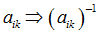
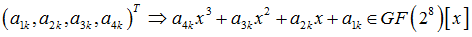
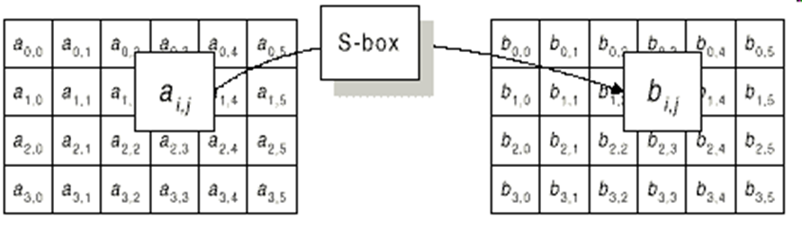
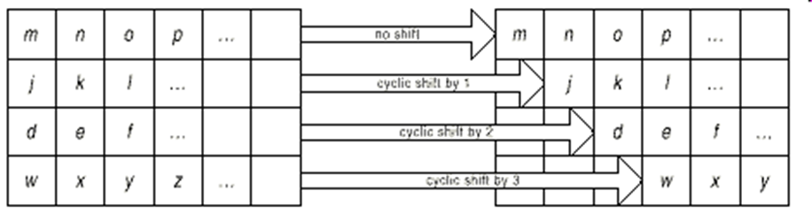
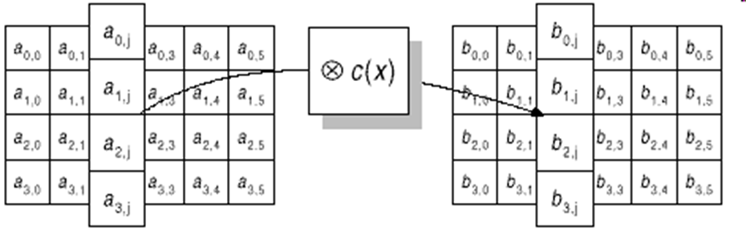

3.2.3. Блочный шифр Rijndael (AES)
3.2.3. Блочный шифр Rijndael (AES)
Это наиболее часто использующийся в мире алгоритм шифрования − победитель конкурса AES. Особенностью его является широкое использование математического аппарата помехоустойчивых кодов для реализации отдельных структурных элементов.
Имеет несколько модификаций для длины блока и ключа 128, 192 и 256 бит, которые также отличаются по количеству раундов. Рассмотрим версию для 128-битного блока и ключа, являющуюся американским стандартом шифрования.
Параметры шифра:
1) структура − подстановочно-перестановочная сеть;
2) количество раундов − 10;
3) размер блока − 128;
4) размер ключа −128.
Один раунд состоит из следующих шагов (рис. 3.17):
а) ByteSub – табличная подстановка 8х8 бит  в поле GF(28), к полученной матрице применяется аффинное преобразование;
б) ShiftRow – сдвиг строк в двумерном массиве на различные смещения. Элементы i-й строки сдвигаются на i позиций вправо, i = 1,2,3,4;
в) MixColumn – математическое преобразование, перемешивающее данные внутри столбца.  умножается на 03x3+01x2+01x+02 по модулю x4+1 и образует новый k-й столбец;
г) AddRoundKey – добавление материала ключа операцией XOR. Матрица складывается с матрицей, которая зависит от ключа из 128 бит и от номера цикла.




Рис. 3.17. Графическое представление операций «ByteSub», «ShiftRow», «MixColumn» и «AddRoundKey» алгоритма AES
 Детальное описание алгоритма AES
Детальное описание алгоритма AES